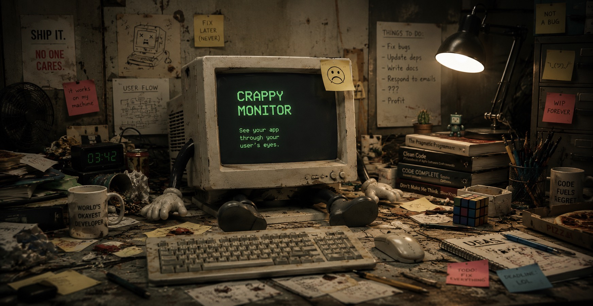

CRAPPYMON BIOS v1.0 · 640K RAM OK · DEGRADING DISPLAY…
You design on a gorgeous Apple display. Your users are squinting at a washed-out TN panel from 2012. Crappy Monitor degrades your screen so you can catch what they can't see — before they can't see it.
Free · macOS 13+ · Menu bar app · No account, no telemetry, no nonsense

That subtle grey-on-white label? Invisible. That elegant dark-mode gradient? A block of mud. That carefully tuned brand color? Three clicks warmer and two stops dimmer on the hospital-issue panel it actually ships to.
In healthcare, logistics, retail, factories and front desks everywhere, real work happens on aging, uncalibrated, low-DPI monitors. Crappy Monitor recreates them on your Mac — with real gamma curves, not an Instagram filter — so contrast bugs show up in design review instead of a support ticket.
Applies actual gamma table manipulation at the display level — brightness, contrast, color temperature, gamma drift and black-level lift — so every app on your screen degrades, not just a screenshot.
Profiles grounded in ICC data and measured failure modes of real office hardware — from the beloved Dell U2412M to a washed-out TN panel from 2005, plus patient monitors aged five and eight years.
Hold the Option key to snap back to your pristine display. Release to return to crappy reality. Instant A/B, no permission dialogs, works from any app.
Your Retina screen packs 4× the pixels of a 96 DPI office panel. Crappy Monitor simulates coarse pixel grids so your hairline borders and 10px labels get the reality check they deserve.
A tiny menu bar control panel with sliders and presets. Toggle it on for a design review, off when you're done. Crash-safe: your display is always restored.
Load a preset, walk through your critical flows, and ask one question: can I still read everything and tell every state apart? If not, your users can't either.
Fix contrast bugs
before QA files them →
Your users will
never thank you.
That's the point.
Nine ways your interface is quietly falling apart out there.
| Preset | Vintage | Native res | DPI | What breaks |
|---|---|---|---|---|
| Dell U2412M (office IPS) | 2011 | 1920×1200 | 94 | subtle greys, thin type |
| HP EliteDisplay E231 (TN) | 2012 | 1920×1080 | 96 | midtone crush, cool cast |
| Lenovo ThinkVision T23i | 2016 | 1920×1080 | 96 | the "fine, I guess" baseline |
| LG 22M38A (cheap TN) | 2014 | 1920×1080 | 102 | contrast collapse, blue shift |
| Crushed blacks (common TN) | 2008 | 1920×1080 | 92 | dark-mode details vanish |
| Faded backlight (aging LCD) | 2011 | 1920×1080 | 92 | everything dim & warm |
| Cool office TN washout | 2005 | 1280×1024 | 96 | pale UI turns invisible |
| Philips IntelliVue MP40 (5 yr) | 2007 | 800×600 | 83 | clinical UI at bedside |
| Philips IntelliVue MX450 (8 yr) | 2012 | 1024×768 | 85 | eight hard years of ICU duty |
Signed & notarized DMG, straight from GitHub Releases. Drag to Applications, click the menu bar icon, pick a preset, feel bad about your contrast choices.
▼ Download .dmgFor people who install everything from the terminal (you know who you are):
brew install --cask crappy-monitor
Crappy Monitor is going open source. The repo is getting a final tidy-up before it opens to the public — star it now and you'll see it the moment it does.
★ Watch on GitHubRequires macOS 13 Ventura or later · Apple Silicon & Intel · Not on the App Store (sandboxing forbids the display-level tricks that make this work) · No data leaves your machine, because none is collected.